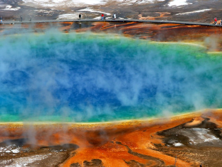

Le Château de Versailles, situé à Versailles, dans les Yvelines en France, est l'un des monuments les plus célèbres du monde. Il a été le siège du pouvoir de la monarchie française aux XVIIe et XVIIIe siècles.
Le château a été construit par Louis XIII au XVIIe siècle et agrandi par son fils Louis XIV, qui a transformé le château en un symbole de grandeur et de pouvoir absolu. Il est célèbre pour ses magnifiques jardins, ses salles de réception somptueuses et sa célèbre galerie des Glaces.
Cité perdue des Incas
2015-06-23
Machu Picchu est une ancienne cité inca perchée dans les montagnes des Andes au Pérou. Elle est connue pour ses impressionnantes structures en pierre et ses vues spectaculaires.
Construit au XVème siècle et abandonné peu de temps après, Machu Picchu a été redécouvert par l'archéologue américain Hiram Bingham en 1911. Il est devenu l'une des destinations touristiques les plus populaires au monde.
Symbole d'amour éternel
2013-11-10
Le Taj Mahal est un mausolée en marbre blanc situé à Agra, en Inde. Il a été construit par l'empereur moghol Shah Jahan en mémoire de son épouse bien-aimée, Mumtaz Mahal.
La construction du Taj Mahal a commencé en 1632 et s'est achevée en 1653. Il est célèbre pour son architecture élégante, ses jardins luxuriants et sa signification romantique.
Barrière protectrice millénaire
2016-04-17
La Grande Muraille de Chine est une série de fortifications construites pour protéger les frontières nord de la Chine contre les invasions des peuples nomades.
La construction de la Grande Muraille a commencé au 7ème siècle avant J.-C. et s'est poursuivie jusqu'au 17ème siècle. Elle s'étend sur plus de 21 000 kilomètres à travers les paysages variés de la Chine.
Trésors de l'Égypte ancienne
2014-09-08
Les Pyramides de Gizeh sont l'une des sept merveilles du monde antique et l'une des attractions touristiques les plus célèbres d'Égypte.
Construites il y a plus de 4 500 ans, les pyramides servaient de tombeaux pour les pharaons de l'Égypte ancienne. Elles témoignent de la puissance et de la grandeur de la civilisation égyptienne.
Amphithéâtre antique
2011-07-30
Le Colisée est un amphithéâtre romain situé au cœur de Rome, en Italie. Il est considéré comme l'un des plus grands symboles de l'architecture romaine.
Construit au 1er siècle après J.-C., le Colisée était utilisé pour les combats de gladiateurs, les spectacles publics et les événements sportifs. Il pouvait accueillir jusqu'à 80 000 spectateurs.
Symbole de liberté
2018-10-05
La Statue de la Liberté est une sculpture monumentale située sur l'île de Liberty Island, à New York. Elle a été un cadeau du peuple français aux États-Unis en 1886.
Conçue par le sculpteur français Frédéric Auguste Bartholdi, la statue représente la liberté et l'émancipation. Elle est devenue l'un des symboles les plus emblématiques de la liberté et de la démocratie.
Symbole emblématique de Paris
2019-08-20
La Tour Eiffel est une célèbre tour de fer située à Paris, en France. Elle est l'un des monuments les plus visités au monde, attirant des millions de touristes chaque année.
Conçue par l'ingénieur Gustave Eiffel, la tour a été achevée en 1889 pour l'Exposition universelle de Paris. À l'époque, elle était critiquée mais est devenue depuis un symbole emblématique de Paris et de la France.
Siège de l'Église catholique
2013-10-12
Le Vatican est la plus petite ville-État indépendante du monde et le siège de l'Église catholique. Il abrite la Basilique Saint-Pierre et la Chapelle Sixtine, célèbres pour leurs œuvres d'art.
Fondé au VIIIe siècle, le Vatican est le centre de l'Église catholique romaine. Il est également connu pour ses musées riches en trésors artistiques et historiques.

Merveilles naturelles
2016-09-30
Le parc national de Yellowstone est le premier parc national au monde, situé principalement dans l'État américain du Wyoming. Il est renommé pour ses geysers, ses sources chaudes, et sa faune sauvage.
Créé en 1872, Yellowstone est l'un des écosystèmes les plus diversifiés et préservés de la planète. Il abrite des animaux emblématiques tels que les bisons, les élans, et les grizzlis, ainsi que des phénomènes géothermiques uniques.